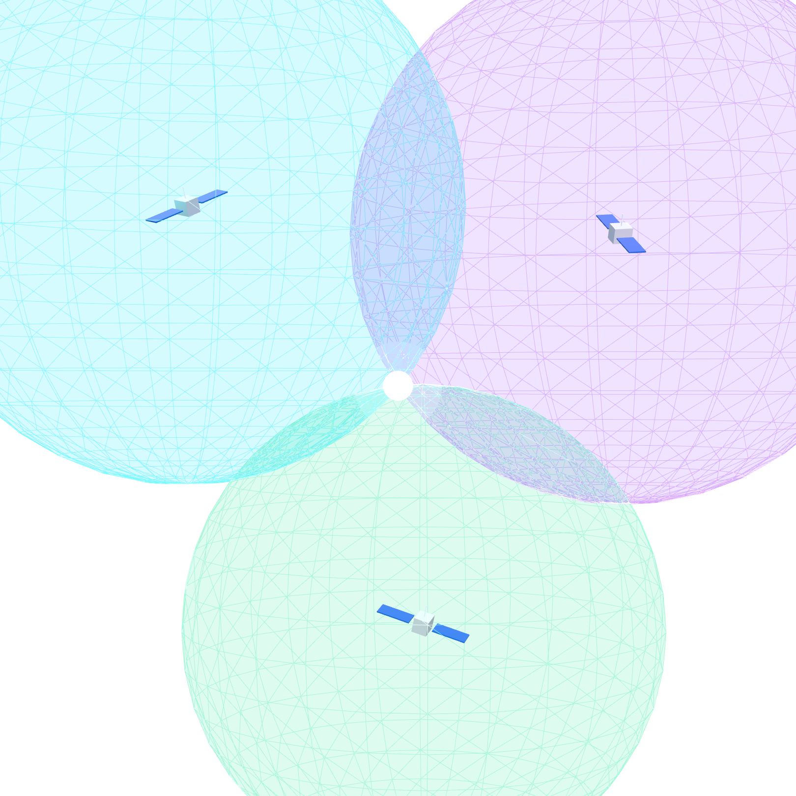
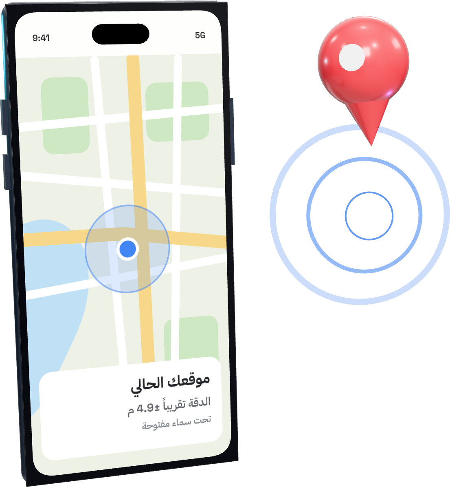

تقنية · الـ GPS
الإنترنت مقطوع…
والخريطة تعرف مكانك؟
السر مو بالإنترنت…
السر بالفضاء
اسحب ←
{{HANDLES}}
تقنية · الـ GPS
2/7
موقعك
مو من النت
خريطة… بدون إنترنت
الإنترنت يحمّل
صور الخريطة
، أما
نقطتك الزرقاء
فتجي من أقمار فوقك
تقنية · الـ GPS
3/7
أقمار
تبثّ الوقت
20,200
كم
ارتفاعها تقريباً فوق الأرض
مدار متوسط
+30 قمر
شغّالة الحين
(31 حسب gps.gov يوليو 2023)
ساعة دقيقة
كل قمر يبث وقته وموقعه باستمرار
تشغّلها
قوة الفضاء الأمريكية
، والخدمة المدنية
متاحة للجميع مجاناً
حول العالم
تقنية · الـ GPS
4/7
الوقت ←
المسافة
زمن وصول الإشارة
×
سرعة الضوء
=
المسافة للقمر

كل قمر =
كرة مسافة
، وأنت عند
التقائها
٣ أقمار
للمكان على الخريطة، و
٤
مع الارتفاع، والساعات تتزامن بدقة عالية جداً
تقنية · الـ GPS
5/7
والنتيجة:
نقطتك

4.9
متر
دقة جوالك تقريباً تحت سماء مفتوحة
(gps.gov)
الدقة
تضعف
قرب المباني والجسور والأشجار
تقنية · الـ GPS
6/7
وين
يضعف؟
1
بين المباني العالية
الإشارة تنحجب فتضعف الدقة
2
أول تحديد بدون اتصال
أبطأ، والاتصال يسرّعه
(A-GPS)
3
الخريطة نفسها
نزّل منطقتها قبل السفر (حسب تطبيقك)
تقنية · الـ GPS
7/7
جوالك يسمع الفضاء…
وانت ما تدري
علي التميمي
كل يوم معلومة تقنية تهمّك
{{HANDLES}}
وين آخر مرة اعتمدت على الـ GPS بدون نت؟

 خريطة… بدون إنترنت
خريطة… بدون إنترنت